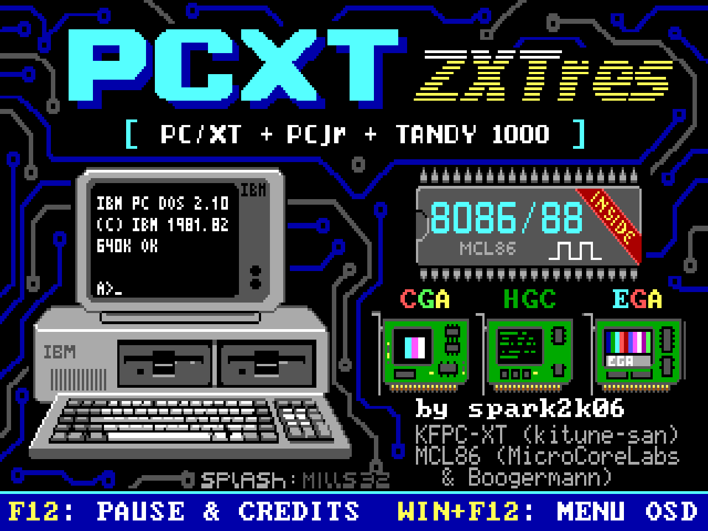

Releases
Which file for which board
The ZXTRES family uses the same board with three sizes of Xilinx Artix-7. A bitstream is made for one FPGA and does not load on another, so take the file from the folder of your board in releases/. Files are named by build date (_YYYYMMDD).
| Board | FPGA | Folder | Files | What it is |
|---|---|---|---|---|
| ZXTRES+ | XC7A100T | A100T-board | PCXT_<date> | The full core: PC/XT, Tandy 1000 and PCjr, CGA/Hercules or EGA, chosen in the OSD. |
| ZXTRES++ | XC7A200T | A200T-board | PCXT_<date> | The same full core, built for the larger FPGA. |
| ZXTRES | XC7A35T | A35T-board | PCXT_CGAHGC, PCXT_EGA, TANDY1000, PCJR | Four builds of one machine each, because the full core does not fit. See Boards & builds. |
Each build comes as a .ZX3 file, loaded from the ZX Spectrum core, and as a .BIT file with the same contents for the core menu of the MiST firmware on the middle board.
The ZXTRES+ (A100T) build is being tried on the board. The ZXTRES++ (A200T) build and the four ZXTRES (A35T) builds meet timing in Vivado but have not been tried on a board yet.
Storage
Preparing the microSD card
The core looks for its files in a folder PCXT at the root of the card, or in the root itself when there is no such folder. Only the BIOS of the machine and card you use is needed.
| File | Needed by | What it is |
|---|---|---|
PCXT.ROM | PC/XT | The PC/XT BIOS; the first 64 KiB of the file are used. |
TANDY.ROM | Tandy 1000 | The Tandy 1000 BIOS. |
PCJR.ROM | PCjr | The PCjr BIOS. |
EGA.ROM | EGA card | The IBM EGA BIOS. |
EC00.ROM | Hard disks | The XT-IDE option ROM (EC00 slot), up to 16 KiB. Some system BIOS images already contain XT-IDE. |
PCXT.CFG | Saving settings | 512 bytes of zeroes, made once: releases/PCXT.CFG is one. The controller can write a file but not create one. |
| Disk images | — | Anywhere on the card, chosen in the OSD: hard disks .VHD or .IMG, floppies .IMG, .IMA or .VFD, PCjr cartridges .JRC. |
Getting the BIOS files
The ROMs are the same as for the MiSTer core, only the names change. The BIOS Builder of the MiSTer project prepares every one of them in the browser, with nothing uploaded; a copy runs offline from SW/ROMs/BIOS_Builder.html. Rename what it produces:
| BIOS Builder output | Name on the ZXTres card |
|---|---|
pcxt_*.rom (Micro8088, Turbo XT, IBM 5160, Juko ST) | PCXT.ROM |
tandy.rom | TANDY.ROM |
pcjr.rom | PCJR.ROM |
ega_bios.rom | EGA.ROM |
ide_xtl.rom | EC00.ROM |
Open images are also in the repository: SW/ROMs/pcxt_pcxt31.rom (Turbo XT BIOS), SW/ROMs/pcxt_xtsergey.rom (Micro8088 BIOS) and SW/ROMs/ide_xtl.rom (XTIDE Universal BIOS). Original copyrighted ROM dumps are not distributed.
A FreeDOS hard-disk image to start with is games/PCXT/hd_image.zip in the repository; extract it to the card.
microSD
├── PCXT/
│ ├── PCXT.ROM PC/XT BIOS
│ ├── EC00.ROM XT-IDE BIOS
│ ├── EGA.ROM (EGA card only)
│ ├── TANDY.ROM (Tandy 1000 only)
│ ├── PCJR.ROM (PCjr only)
│ ├── PCXT.CFG 512 zero bytes
│ └── Freedos_HD.vhd from games/PCXT/hd_image.zip
└── PCXT_20261122.ZX3 the core for your boardStart-up
Loading the core
- Copy the
.ZX3file of your board to the card, with the files above. - In the ZX Spectrum core, press F5 for the NMI browser, select the file and load it. It goes to a temporary flash slot and does not replace the installed cores.
- To go back to the Spectrum core, choose Reload ZX core on the OSD page Settings and confirm: the FPGA reloads the Spectrum core from the board's flash.
With the MiST firmware on the middle board, put the .BIT file of the same release in the card's MIST folder instead: the core menu shown at power-up lists it by its file name. The PCXT folder is the same either way.
Plug the PS/2 mouse in before the core starts, or before a reset from the OSD: the converter handshakes with it at that point.
Configuration
First boot

- Open the OSD with Win+F12.
- On the full core (ZXTRES+ and ZXTRES++), choose the Machine on the main page and, for a PC/XT, the Video card on the page Video. The ZXTRES builds have one machine and one card and show neither entry.
- On the page BIOS, check that the BIOS of that machine (and the EGA BIOS for the EGA card) is loaded; any file of the card can be chosen instead of the default names.
- Mount a floppy or a hard-disk image from the main page.
- Choose Reset & apply: the machine, the card, the CPU type and the PCjr RAM size are latched at reset, and a hard disk chosen while the machine runs is mounted then.
- On the page Settings, Save settings writes everything to
PCXT.CFG, including the image and BIOS paths, so the next start mounts them again.
While the BIOS of the chosen machine, or the EGA BIOS, is missing, the splash stays on screen and the machine is held in reset. This is expected: load the file on the page BIOS.
A practical first test is the PC/XT with the Micro8088 or Turbo XT BIOS, EC00.ROM, and the FreeDOS hard-disk image.
Display
Video output
The board has a VGA connector. The core sends 31 kHz VGA by default and can send 15 kHz for a television or an arcade monitor through a suitable adapter. There is no HDMI, scaler or DisplayPort.
| Source | Output |
|---|---|
| 200-line CGA, Tandy, PCjr and EGA modes | Line doubled to 31.4 kHz, 640×480 at about 60 Hz (Scandoubler: Auto). |
| 350-line EGA and Hercules/MDA modes | 350-line CRT: 480p 31 kHz (720×480 at 59.94 Hz, the default), Native, 480i 15 kHz or 240p 15 kHz, through a scan converter in the board's SRAM. |
| 15 kHz output | Scandoubler: Off leaves the 200-line modes at 15.7 kHz with positive syncs; the vertical sync is held to 3 lines so that a VGA monitor that takes the picture as 480i accepts it. |
The page Video › Output also has the CRT offsets and a Video info page, which shows what the machine draws and what leaves the VGA pins, measured in the FPGA. The picture options (display tint, composite colour, border, CRTC frame stacking) are described in the OSD reference.
Controls
Keys, joysticks and mouse
| Key | Action |
|---|---|
| Win+F12 | Open the OSD; the keyboard does not reach the machine while it is open. |
| Cursor keys, Enter | Move in the menu, change an option or open a page; left and right change the option under the cursor. |
| Esc | Back out of a page; from the main page, close the OSD. |
| F12 | Pause the machine and scroll the credits; F12 again resumes. On the splash it holds the countdown. |
| F11 | With both the CGA and the Hercules card (PC/XT with CGA/HGC), swap the output between them. |
Keyboard
A PS/2 keyboard. The machine gets XT scan codes, Tandy codes or PCjr infrared frames, depending on the machine.
Mouse
A PS/2 mouse appears to DOS as a serial mouse on COM1; use a driver such as CTMOUSE (in hdd/CTMOUSE).
Joysticks
The two DB9 ports give directions and buttons only, so Digital is the first choice of Joystick 1/2. Swap Joysticks exchanges them.
Media
Disks, cartridges and settings
- Floppies A and B are mounted at once. The PCjr has drive A only.
- Hard disks 0 and 1 are served to the XT-IDE BIOS (
EC00.ROM). A hard disk chosen while the machine runs is mounted at the next Reset & apply, so the BIOS detects it; the page Info marks it "(reset)" until then. - PCjr cartridges (
.JRC) go in the two cartridge entries of the page BIOS; one stays in for the session only, and the machine restarts to see it. - Dismounting: open the file selector of a drive or cartridge; its first row, Unmount NAME, removes the image. Back leaves it as it was.
- Settings are kept in
PCXT.CFG(OSD options, four image paths and five BIOS paths). Without that file nothing is mounted at start and the defaults apply.
The supplied hdd/CONFIG.SYS was written for an EMS frame at C000h; on the ZXTres the frame is at D000h, so move the /p: frame of LTEMM and the USE!UMBS range to D000h.
Sound
Audio
The board's audio jack (sigma-delta) and its I2S output carry the same stereo mix: PC speaker, AdLib (OPL2), Sound Blaster Pro or C/MS, SN76489 and the PCjr tape line, as far as the build has them (see the feature matrix). Audio 220h picks C/MS or the Sound Blaster, which collide on 226h/227h. There is no MIDI or MT32-pi: the board has no user port.
Help
Troubleshooting
| What you see | What to check |
|---|---|
| The splash never ends | The BIOS of the chosen machine (or the EGA BIOS) is missing: page BIOS. On the full core, check that Machine is the one whose BIOS you have. |
| Settings are not kept | PCXT.CFG must exist (512 zero bytes) in the PCXT folder; the page Info says "PCXT.CFG missing" otherwise. |
| The hard disk is not found | EC00.ROM (XT-IDE) must be loaded, and a disk chosen while the machine runs needs Reset & apply. |
| No mouse in DOS | Plug the mouse in before loading the core or before a reset, and load a serial mouse driver for COM1. |
| The monitor shows nothing with 15 kHz | Set Scandoubler back to Auto and 350-line CRT to 480p 31 kHz for a VGA monitor. |
| The file does not load | The .ZX3 must be the one of your FPGA (A35T, A100T or A200T). |